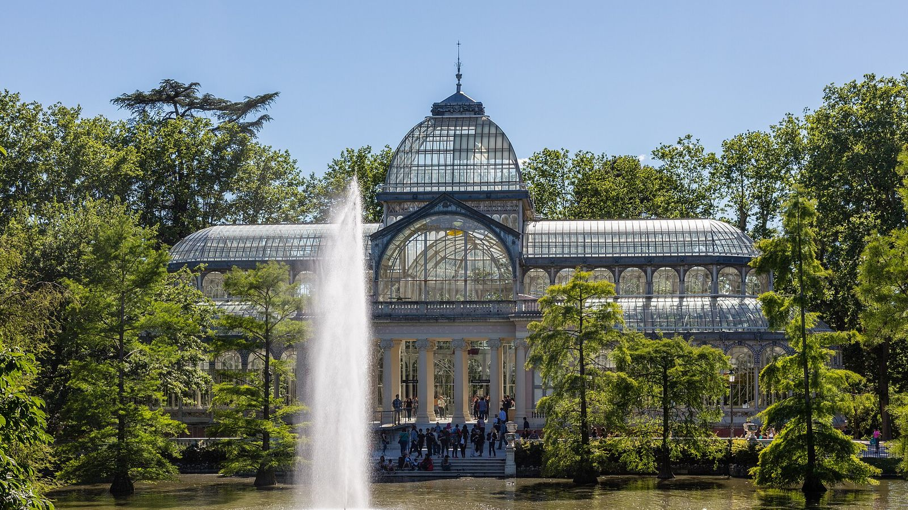

Hecho para plantas
Se construyó para mostrar plantas tropicales de Filipinas. El estanque de delante, con sus cipreses de los pantanos, formaba parte de la misma idea.
Construido en hierro y vidrio en 1887 para una exposición sobre Filipinas, entonces colonia española, el Palacio de Cristal fue un gran invernadero de plantas tropicales. Hoy es una sala gratuita de arte contemporáneo del Museo Reina Sofía.
Actualizado

El Palacio de Cristal se construyó para la Exposición de Filipinas de 1887, celebrada en el Retiro cuando Filipinas era colonia española. Lo diseñó Ricardo Velázquez Bosco, y albergó plantas tropicales vivas traídas de las islas.
Su estructura de hierro, fabricada en Bilbao, sostiene paredes y una cúpula de vidrio sobre un zócalo de ladrillo decorado con cerámica. La cúpula supera los 22 metros. Como el Crystal Palace de Londres, que lo inspiró, se pensó para poder desmontarse y levantarse en otro sitio, pero nunca ha dejado su lugar junto al lago.
Ya no es un invernadero. Hoy pertenece al Museo Reina Sofía, que lo usa, junto con el cercano Palacio de Velázquez, para exposiciones temporales de arte.
Se construyó para mostrar plantas tropicales de Filipinas. El estanque de delante, con sus cipreses de los pantanos, formaba parte de la misma idea.
En 1936 la asamblea que eligió a Manuel Azaña presidente de la Segunda República se reunió aquí, porque el edificio del Congreso se quedaba pequeño.
Busca la decoración cerámica de Daniel Zuloaga bajo la línea del tejado, un detalle que casi todos se pierden mirando el vidrio.
Sí. Acoge exposiciones gratuitas de arte contemporáneo del Museo Reina Sofía; puede cerrar entre exposiciones y con mal tiempo.
Para la Exposición de Filipinas de 1887, como invernadero de plantas tropicales traídas de las islas.
Dentro del Parque del Retiro, a pocos pasos del gran estanque del parque.
El arquitecto Ricardo Velázquez Bosco, para la Exposición de Filipinas de 1887.
Instalaciones de arte contemporáneo organizadas por el Museo Reina Sofía; el edificio ya no es un invernadero.
Almudena Cathedral · Mercado de San Miguel · Plaza Mayor · Puerta del Sol · Royal Palace of Madrid · Templo de Debod
Audioguía de MadridTodos los lugares de Madrid, con la historia que la app te cuenta allí.